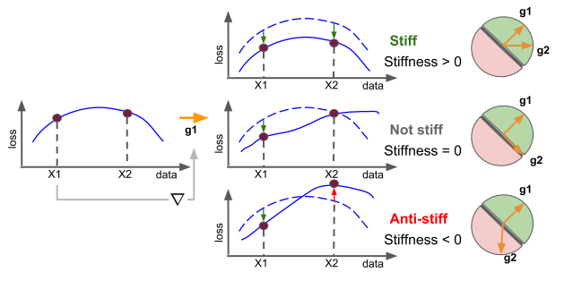

概述¶
定义固化度stiffness为一个输入的梯度对另一个输入损失、梯度的影响
一种新指标， 实验及结论需要读懂
但实验和实验结论一向难细看。
数学定义¶
给定神经网络 $f$, 损失函数 $L$, 则对两个输入 $(X_1, y_1), (X_2, y_2)$可求梯度：
$$
\vec{g}{1}=\nabla\right)
\} \mathcal{L}\left(f_{W}\left(X_{1}\right), y_{1
\vec{g}{2}=\nabla\right)
$$} \mathcal{L}\left(f_{W}\left(X_{2}\right), y_{2
如果网络权重$W$沿$\vec{g}$方向进行变化， 我们可以得到两个输入的损失变化：
$$ \begin{aligned} \Delta \mathcal{L}{1} &=\mathcal{L}\left(f{1}}\left(X\right) \}\right), y_{1}\right)-\mathcal{L}\left(f_{W}\left(X_{1}\right), y_{1
&= \varepsilon \nabla_{\varepsilon} \mathcal{L}\left(f_{W+\varepsilon \vec{g}{1}}\left(X\right) \ &=\varepsilon \vec{g}}\right), y_{1{1} \cdot \vec{g} \ \Delta \mathcal{L}{2} &=\varepsilon \nabla} \mathcal{L}\left(f_{W+\varepsilon \vec{g{1}}\left(X\right) \ & =\varepsilon \vec{g}}\right), y_{2{1} \cdot \vec{g} \end{aligned} $$
则数学化描述固化度为： $$ S((X_{1}, y_{1}),(X_{2}, y_{2}) ; f)=\mathbb{E}[\operatorname{sign}(\overrightarrow{g_{1}} \cdot \overrightarrow{g_{2}})] $$ 